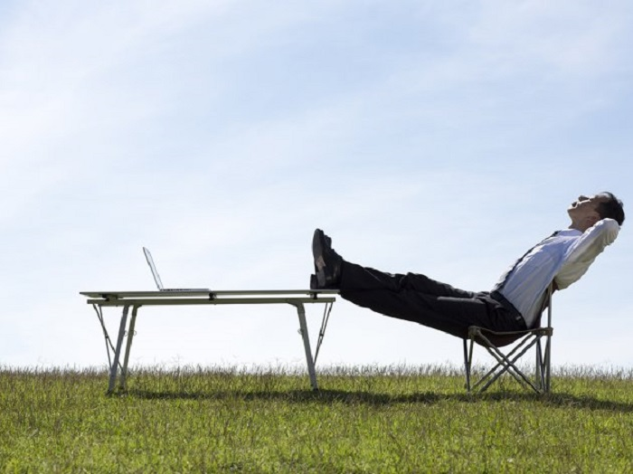

ISKLEŠI SVOJE TELO!
Iako je ishrana jako bitna u nasem putovanju do savršenog izgleda, stvar bez koje
ne mozemo da zavrsimo putovanje jeste trening. Trening kao jedan jako važan faktor donosi nam
puno nevolja kao što su odustajanje, manjak želje, u najogrem slučaju čak i povrede usled nepravilnog izovdjenja.
Da ne bi doslo do toga, vi ste ovde da se informišete, i da se spremite za bitku sa
SAMIM SOBOM!
Napomena: Kilažu prilagodite, i povećavajte umereno i u skladu sa vašim fizičkim mogućnostima.
Nadjite prijatelja/prijateljicu radi medjusobne pomoći u teretani.
Nedeljni plan treninga!
PRVI DAN: Noge
Čučnjevi: 4 serije, 7 ponavljanja, koliko god odmora je potrebno
Iskorak: 4 serije, 10 ponavljanja, minut odmora
Rumunsko dizanje na jednoj nozi: 4 serije, 10 ponavljanja, minut odmora
Leg pres jednom nogom: 4 serije, 8 ponavljanja, minut odmora
DRUGI DAN: Ramena

Potisak bučicama: 4 serije, 10 ponavljanja, 90 sekundi odmora
Bočni potisak bučicama: 4 serije, 10 ponavljanja, 1 minut odmora
Zadnji potisak deltoidnih mišića: 4 serije, 10 ponavljanja, 1 minut odmora
Prednji potisak: 4 serije, 10 ponavljanja, 1 minut odmora
TRECI DAN: Odmor
Mozda najdrazi dan u nedelji, a mozda i ne. Kako go vi gledali na taj dan odmora, on nosi
puno benefita sa sobom. Dobro isplaniran dan odmora doprinosi vasem telu zdrav razvoj
misica, kao i oporavak istih. Nemojte ga zaobilaziti, niti ga cesto upraznjavati, kao sto sam
i rekao vrlo je bitno koji je dan u nedelji dan za odmor.
ČETVRTI DAN: Ledja
Sumo mrtvo dizanje: 7 serija, 4 ponavljanja, koliko god vam treba
Zgibovi: 4 serije, 6 ponavljanja, koliko god vam treba
Jednoručno veslanje: 5 serija, 10 ponavljanja, jedan minut odmora
Veslanje na egometru: 4 serije, 10 ponavljanja ,jedan minut odmora
PETI DAN: Grudi
Benč pres: 7 serija, 4 ponavljanja, koliko god vam treba
Potisak na kosoj podlozi: 4 serije, 6 ponavljanja, koliko god vam treba
Letenje bučicama: 4 serije, 10 ponavljanja, jedan minut odmora
Pullover bučicama: 4 serije, 15 ponavljanja, jedan minut odmora
ŠESTI DAN: Ruke
Nosebreakers: 4 serije, 8 ponavljanja, jedan minut odmora
Triceps propadanje: 4 serije, 10 ponavljanja, jedan minut odmora
Povlačenje kanapa: 4 serije, 12 ponavljanja, jedan minut odmora
Preacher pregib na krivoj šipci: 6 serija, 6 ponavljanja, jedan minut odmora
Pregib bučicama pod uglom od 45 stepeni: 3 serije, 10 ponavljanja, jedan minut odmora
Čekić pregib: 3 serije, 10 ponavljanja, jedan minut odmora
SEDMI DAN: Odmor

Ako ne date sebi dovoljno vremena za odmor i oporavak, vaše telo neće moći da se adaptira na
težinu treninga – nećete biti jači, nećete biti brži. Ako predugo zanemarite odmor gubićete
snagu i brzinu. Potonućete u crnu rupu zvanu – pretreniranost.